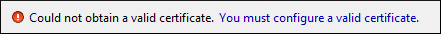
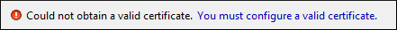

Signing Files
You can select the type of signature to be used for documents from a signature settings dialog box. To open this dialog box, select the Sign action from the Source submenu when invoking the contextual menu in Text mode or from the Tools menu.
The following options are available:
Note: If Oxygen XML Editor could not find a valid certificate, a link is provided at the
top of the dialog box that opens the XML Signing
Certificates preferences page where you can configure a valid certificate.


- Input - Available if the Sign action was selected from the Tools menu. Specifies the location of the input URL.
- Transformation Options - See the
Digital Signature
Overview section for more information about these options.
- None - If selected, no canonicalization algorithm is used.
- Exclusive - If selected, the exclusive (uncommented) canonicalization method is
used.Note: Exclusive Canonicalization just copies the namespaces you are actually using (the ones that are a part of the XML syntax). It does not look into attribute values or element content, so the namespace declarations required to process these are not copied. This is useful if you have a signed XML document that you want to insert into other XML documents (or you need self-signed structures that support placement within various XML contexts), as it will ensure the signature is verified correctly each time.
- Exclusive with comments - If selected, the exclusive with comments canonicalization method is used.
- Inclusive - If selected, the inclusive (uncommented) canonicalization method is
used.Note: Inclusive Canonicalization copies all the declarations, even if they are defined outside of the scope of the signature, and all the declarations you might use will be unambiguously specified. Inclusive Canonicalization is useful when it is less likely that the signed data will be inserted in other XML document and it is the safer method from the security standpoint because it requires no knowledge of the data that are to be secured to safely sign them. A problem may occur if the signed document is moved into another XML document that has other declarations because the Inclusive Canonicalization will copy them and the signature will be invalid.
- Inclusive with comments - If selected, the inclusive with comments canonicalization method is used.
- XPath - The XPath expression provides the fragments of the XML document to be signed.
- ID - Provides ID of the XML element to be signed.
- Envelope - If selected, the enveloped signature is used. See the Digital Signature Overview for more information.
- Detached - If selected, the detached signature is used. See the Digital Signature Overview for more information.
- Append KeyInfo - If this option is selected, the
<ds:KeyInfo>element will be added in the signed document. - Signature algorithm - The algorithm used for signing the document. The following options are available: RSA with SHA1, RSA with SHA256, RSA with SHA384, and RSA with SHA512.
- Output - Available if the Sign action was selected from the Tools menu. Specifies the path of the output file where the signed XML document will be saved.
- Open in editor - If selected, the output file will be opened in Oxygen XML Editor.